首頁 ／ 人事管理
STAFF
人事管理
排班、請假、交接不再靠 LINE 和記憶
- 排班表改了三次，還是有人說沒看到？
- 員工用 LINE 請假，訊息一多就漏掉，排班時才發現少一個人？
- 交接靠嘴巴講，下一班根本不知道雞肉快沒了？
- 新人來上班，資料、證件還要老闆一個一個打進電腦？
適合你，如果你是：店裡有 2 位以上員工、每週要排班的店。
下面每個功能都先說以前的麻煩，再看系統怎麼解決；手機裡是系統的實際畫面，可以上下滑動。
員工建檔與邀請加入
- 以前
- 新人到職，老闆要抄姓名、電話、緊急聯絡人，再一筆一筆輸入。
- 現在
- 傳一條專屬連結給新同事，他用自己的手機填好資料、設定打卡 PIN，你按確認就建檔完成。
- 你省下的
- 老闆不用代打資料；連結一次性、7 天內有效，不怕外流。
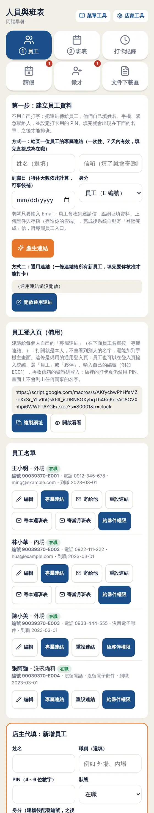
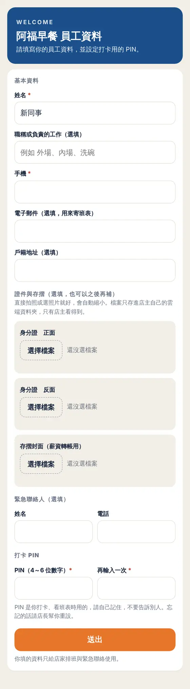
排班邀請
- 以前
- 每個月要在群組裡問「下個月哪幾天可以上班」，再自己整理回覆。
- 現在
- 系統在你設定的日期自動請員工回報，員工在月曆上點選可上班的日子，誰回了、誰還沒回清楚列出。
- 你省下的
- 不用追訊息，排班前就知道每個人能上哪幾天。
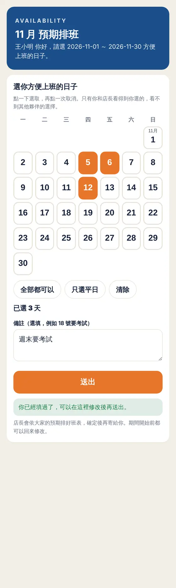
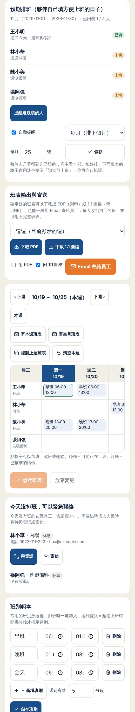
每週班表
- 以前
- 班表貼在牆上或傳照片，改了一格就要重傳，員工常看到舊的。
- 現在
- 在手機上排一週的早班、晚班，員工手機上看到的永遠是最新的班表。
- 你省下的
- 改班不用再重傳照片，也不會有人照舊班表來上班。
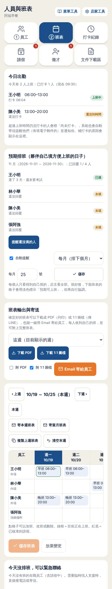
請假審核
- 以前
- 請假散在 LINE 和口頭，排班時才發現當天有人請假。
- 現在
- 員工在手機送出假單，你按「核准」或「駁回」，員工自動收到結果，待審的假單有紅點提醒。
- 你省下的
- 不用翻訊息找假單，誰請過假都有紀錄。
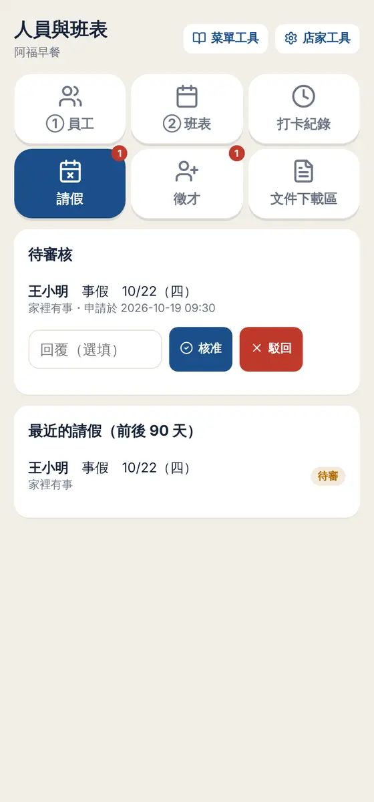
員工打卡
- 以前
- 用紙本簽到或打卡鐘，月底還要一張一張算工時。
- 現在
- 員工用自己的 PIN 在店裡手機打卡，遲到可以填原因；打卡紀錄可以查詢、匯出 CSV。
- 你省下的
- 不用買打卡鐘，月底直接匯出紀錄算薪水。
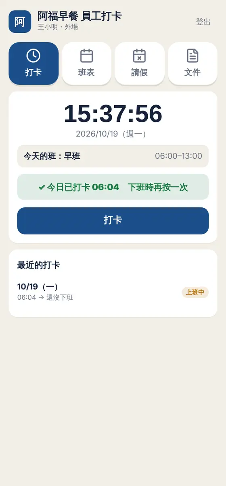
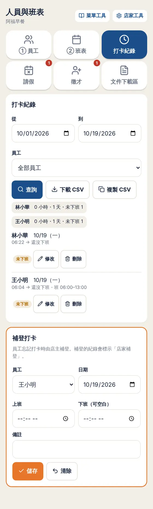
交接紀錄
- 以前
- 交接靠嘴巴講或寫在便條紙，下一班沒看到，食材沒叫、設備壞了沒人知道。
- 現在
- 每一班把要交代的事寫下來，可以標「急」、指定交給誰，下一班打開就看到今日摘要。
- 你省下的
- 重要的事不會在換班時掉了。
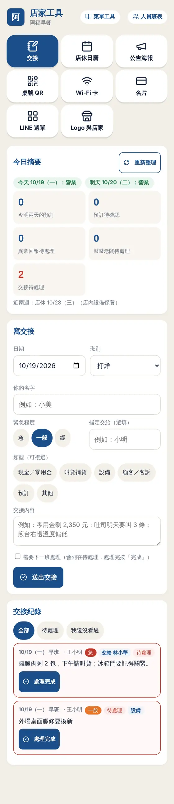
徵才與面試登記
- 以前
- 門口貼「誠徵」，應徵電話打來時正在忙，聯絡方式也記不住。
- 現在
- 產生徵才海報與 QR Code，應徵者掃碼自己登記，資料直接進到你的應徵名單。
- 你省下的
- 忙的時候不用接應徵電話，有空再一次看名單。
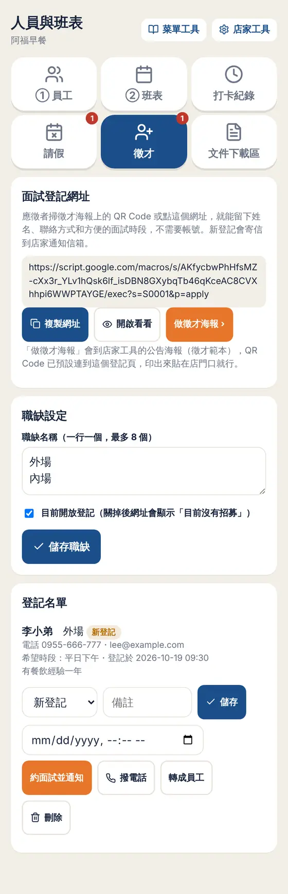
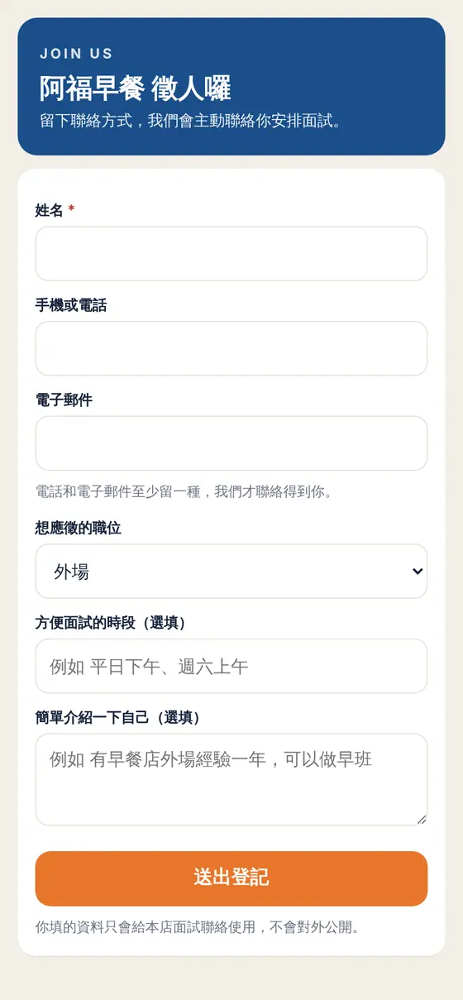
文件下載
- 以前
- 員工手冊、開店流程每個新人都要再傳一次，版本也不一致。
- 現在
- 把文件上傳一次、設定誰看得到，員工自己用手機下載。
- 你省下的
- 新人訓練用同一份最新的文件。
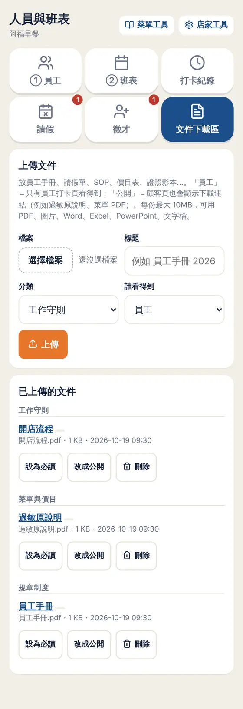